01 / 16 · The question
What changes when AI can help us discover?
当 AI 开始参与发现，我们的价值在哪里？
- AI is entering parts of the research process.
- The opportunity is broader than faster writing.
- Our role: define worthwhile problems and establish trustworthy answers.
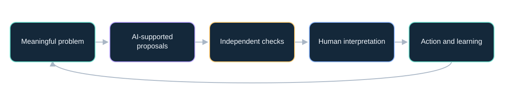
Conceptual workflow: proposals become useful through evidence and accountable decisions.
Framing · Reviewed 2026-10-02 ·
02 / 16 · The question
A model becomes useful through a system
模型能力要通过工具、数据和验证转化为价值。
- LLM: generates language and other learned representations.
- Reasoning workflow: spends effort exploring and checking steps.
- Agent: uses tools, observes results and chooses further actions.
- A fluent explanation does not establish correctness.
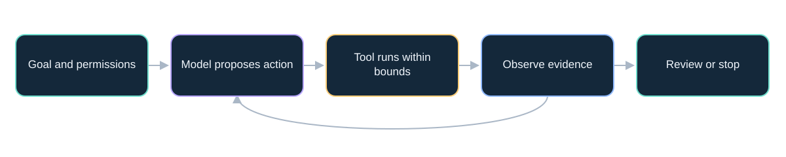
Tool access and a stopping condition are explicit parts of the system.
Explanation · Reviewed 2026-10-02 · COSCI · EVOLVE
03 / 16 · Mathematics
Read the evidence before repeating the headline
先判断证据，再传播结论。
- Ask who made the claim and when.
- Read the exact problem and assumptions.
- Locate the paper, code, data or certificate.
- Separate artifact checking, scientific acceptance and practical usefulness.
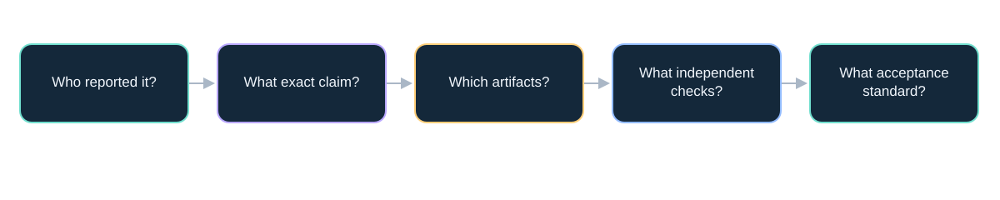
Different disciplines use different acceptance standards. These are questions, not a universal linear ranking.
Recommendation · Reviewed 2026-10-02 · CLAY · CLAY-RULES · NS-LEAN
04 / 16 · Mathematics
Navier–Stokes: a precise, attributed frontier claim
重大数学进展，要精确表述并接受独立检验。
- OpenAI announced a proposed solution on September 8, 2026.
- The manuscript constructs finite-time blowup with smooth forcing and positive viscosity.
- The exact forced formulation matters.
- Independent acceptance and prize recognition are separate.
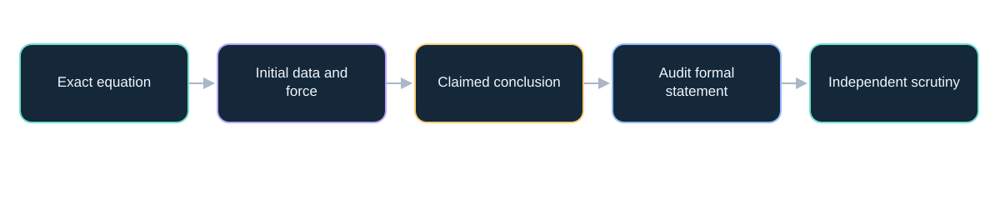
Interpretation guide; this package does not certify a mathematical proof.
Reported result · Reviewed 2026-10-02 · NS-ANN · NS-PAPER · NS-LEAN · CLAY · CLAY-RULES
05 / 16 · Mathematics
Verification is infrastructure for discovery
把验证建设成基础设施。
- Specify what a valid answer must satisfy.
- Use checks that can reject the proposal.
- Keep provenance, assumptions and failure cases.
- Spend verification effort where errors matter most.
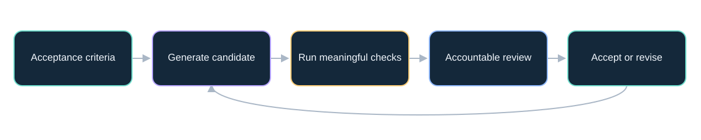
Use checks capable of rejecting a generated result; select the reviewer and criteria before acting.
Recommendation · Reviewed 2026-10-02 · NIST
06 / 16 · Science
Scientific AI is a broader ecosystem than LLMs
科学 AI 不只有大语言模型。
- AlphaFold 3 predicts structures of biomolecular complexes.
- Specialized predictors and generators support different tasks.
- LLMs can help connect literature, code and tools.
- Structure, function, mechanism and clinical benefit require different evidence.
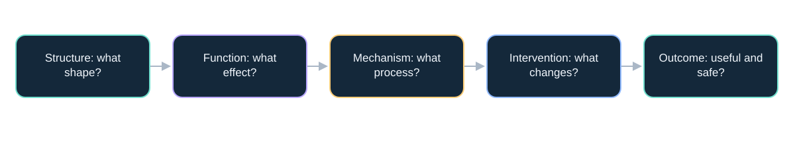
A shape prediction does not by itself identify function, mechanism or therapeutic benefit.
Peer-reviewed evidence · Reviewed 2026-10-02 · AF3
07 / 16 · Science
Drug discovery still ends in evidence from people
候选分子不等于获批药物，临床证据不可跳过。
- AI can support target selection and candidate design.
- Rentosertib has a published phase 2a IPF trial.
- That study involved 71 patients and a 12-week treatment period.
- Its primary objective was safety and tolerability; broader benefit needs further evidence.
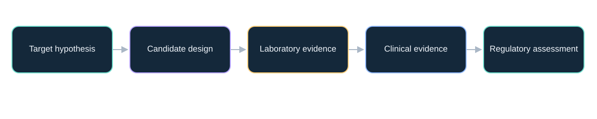
A simplified educational pipeline; stages and regulatory requirements differ by product and jurisdiction.
Peer-reviewed evidence · Reviewed 2026-10-02 · DRUG
08 / 16 · Science
From prediction and generation to testable mechanisms
从预测与生成，走向可检验的机制假说。
- Repository contribution: Shengchao Liu’s Wave Intelligence perspective.
- Connect text, structures and measurements through shared representations.
- Model how a system evolves under conditions and interventions.
- Compare alternative mechanisms using observable predictions.
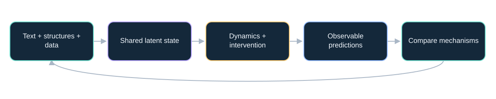
Original explanatory adaptation of Liu’s repository perspective, pp. 3–6; a research agenda, not an established validated system.
Proposed framework · Reviewed 2026-10-02 · WAVE
09 / 16 · Science
Research agents need feedback from the world
研究智能体需要来自真实世界的反馈。
- Coscientist demonstrated tool-connected laboratory workflows.
- AlphaEvolve connects program proposals to automated evaluation.
- The evaluator determines what progress means.
- Simulation success needs an appropriate bridge to reality.
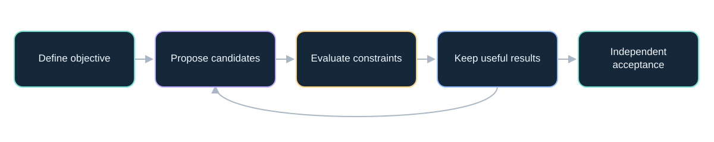
Conceptual abstraction of tool-connected discovery; simulation and physical validation can have different requirements.
Mixed evidence · Reviewed 2026-10-02 · COSCI · EVOLVE · EVOLVE26
10 / 16 · Work
In software, measure the whole task
衡量整个任务，而不是生成代码的速度。
- AI can assist drafting, debugging, tests and code exploration.
- METR’s early-2025 experiment found 19% longer task time in its setting.
- The February 2026 follow-up identifies major measurement biases.
- Measure current tools on your own tasks, including review and rework.
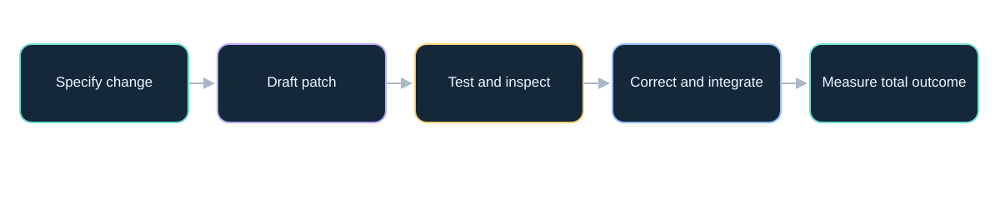
Generation time is only one component. Acceptance includes review and integration.
Empirical evidence · Reviewed 2026-10-02 · METR25 · METR26
11 / 16 · Work
Knowledge work depends on context and quality
知识工作的收益取决于场景和质量。
- A support-agent study found heterogeneous productivity gains.
- Its November 2024 manuscript version reports 15% on average.
- That metric is issues resolved per hour in one work setting.
- Transfer requires access to relevant knowledge and quality checks.
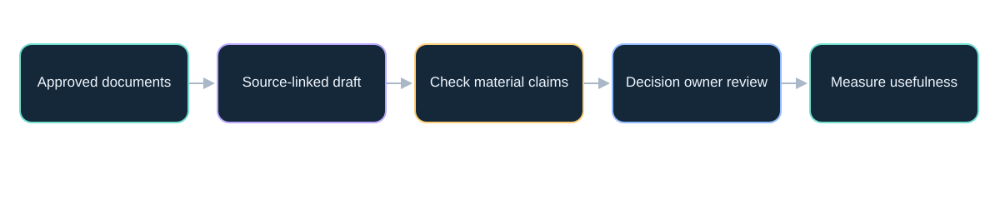
The final decision owner checks material claims and the completeness of the evidence.
Empirical evidence · Reviewed 2026-10-02 · WORK
12 / 16 · Alumni opportunities
Find the opportunity inside your discipline
机会来自专业知识与 AI 能力的结合。
- Engineering: explore alternatives; check constraints and simulation validity.
- Science: organize evidence; design discriminating experiments.
- Software: propose changes; measure integration quality.
- Leadership: redesign workflows; retain accountable owners.
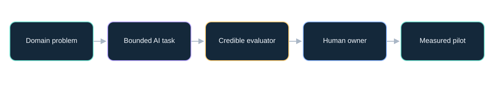
Illustrative suggestions for alumni; no claims about an existing DUT alumni program.
Illustrative opportunities · Reviewed 2026-10-02 ·
13 / 16 · Alumni opportunities
Build the skills that make assistance dependable
会提问，更要会验证、会整合、会负责。
- Problem formulation and domain judgment.
- Data literacy, provenance and uncertainty.
- Evaluation, experimentation and tool integration.
- Communication, accountability and continued learning.
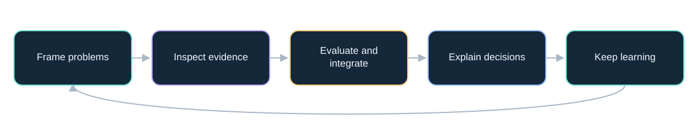
Recommended capabilities to practice together, rather than a forecast of job counts.
Recommendation · Reviewed 2026-10-02 ·
14 / 16 · Responsible adoption
Match autonomy to consequences
自主程度要与后果和验证能力相匹配。
- Confident errors and unsupported citations.
- Sensitive data and malicious instructions in retrieved content.
- Unequal outcomes, deskilling and unclear responsibility.
- Use bounded permissions, evidence checks and accountable review.
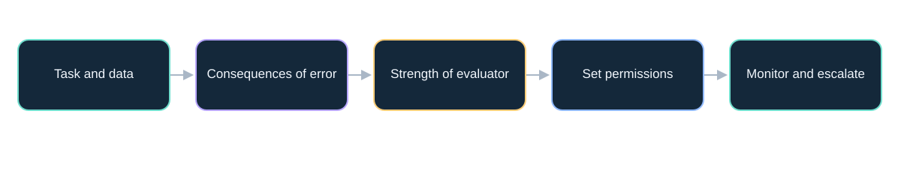
Suggested decision aid, not a numeric risk model or legal determination.
Recommendation · Reviewed 2026-10-02 · NIST
15 / 16 · Responsible adoption
Run one measured pilot in the next 30 days
30 天内做一个可衡量、可复盘的试点。
- Week 1: choose a task, owner and baseline.
- Week 2: define inputs, checks and bounded access.
- Week 3: compare matched tasks and record failures.
- Week 4: decide to expand, revise or stop.
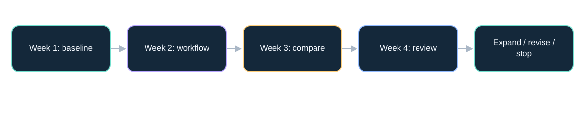
Recommended schedule. Expand, revise and stop are all legitimate outcomes.
Recommendation · Reviewed 2026-10-02 ·
16 / 16 · Discussion
More ideas. Stronger evidence. Human responsibility.
让 AI 扩展探索，让证据决定行动，让人承担责任。
- Use AI to widen the space of possibilities.
- Use evidence to decide what deserves action.
- Build your career around judgment and reliable execution.
- Panel question: which alumni problem has both value and a credible evaluator?
Conceptual workflow: proposals become useful through evidence and accountable decisions.
Synthesis · Reviewed 2026-10-02 ·